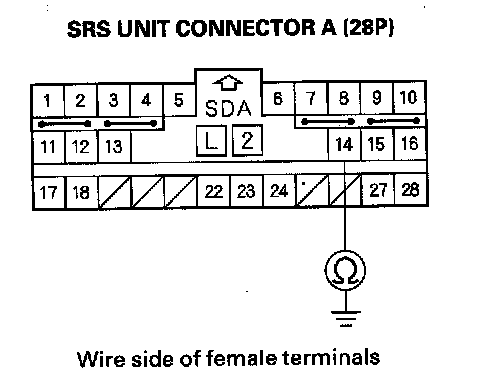

DTC 81-61
DTC 81-61,85-61: No Signal From ODS UnitDTC 81-62,85-62: Non-Stipulated Response Data
NOTE: Before doing this troubleshooting procedure, review SRS Precautions and Procedures.
1. Make sure nothing is on the front passenger's seat.
2. Erase the DTC memory.
3. Read the DTC.
Is DTC 81-61, 85-61, 81-62, or 85-62 indicated?
YES - Go to step 4.
NO - Intermittent failure, the system is OK at this time. Go to Troubleshooting Intermittent Failures. If another DTC is indicated, go to the DTC Troubleshooting Index.
4. Check the connection between the ODS unit harness 18P connector and the ODS unit.
Is the connection OK?
YES - Go to step 6.
NO - Repair the poor connection and retest. If DTC 85-61 or 85-62 is still present, go to step 5.
5. Turn the ignition switch OFF.
6. Check the No. 20 (7.5 A) fuse in the under-dash fuse /relay box.
Is the fuse OK?
YES - Go to step 7.
NO - Replace the fuse, then turn the ignition switch ON (II). If the fuse blows again, check for a short in the No. 20 (7.5 A) fuse circuit (floor wire harness, or ODS unit harness).
7. Disconnect the ODS unit harness 18P connector (A) from the ODS unit.
8. Turn the ignition switch ON (II).
9. Measure the voltage between the No. 1 terminal of the ODS unit harness 18P connector and body ground. There should be battery voltage.
Is there battery voltage?
YES - Go to step 10.
NO - Open in the floor wire harness, or ODS unit harness; replace the faulty harness.
10. Turn the ignition switch OFF.
11. Measure the resistance between the No. 12 terminal of the ODS unit harness 18P connector and body ground. There should be 0 - 1.0 ohm.
Is the resistance as specified?
YES - Go to step 12.
NO - Open in the ODS unit harness, floor wire harness, or poor ground connection at G605. If G605 is OK, replace the faulty harness.
12. Turn the ignition switch OFF. Disconnect the negative cable from the battery, and wait for 3 minutes.
13. Disconnect SRS unit connector A (28P) from the SRS unit.

14. Measure the resistance between the No. 14 terminal of SRS unit connector A (28P) and body ground. There should be an open circuit or at least 1 Mohm.
Is the resistance as specified?
YES - Go to step 15.
NO - Short to ground in the dashboard wire harness or floor wire harness; replace the faulty harness.
15. Turn the ignition switch ON (II), and measure the voltage between the No. 14 terminal of SRS unit connector A (28P) and body ground. There should be 0.5 V or less.
Is the voltage as specified?
YES - Go to step 16.
NO - Short to power in the dashboard wire harness or floor wire harness; replace the faulty harness.
16. Measure the resistance between the No. 14 terminal of SRS unit connector A (28P) and the No. 7 terminal of the ODS unit harness 18P connector. There should be 0 - 1.0 ohm.
Is the resistance as specified?
YES - Faulty ODS unit or SRS unit; replace the ODS unit. If the problem is still present, replace the SRS unit.
NO - Open in the dashboard wire harness or floor wire harness; replace the faulty harness.